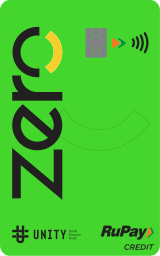

India Saving.
भारतीय बचत.
A trusted financial institution for savings, investments, retirement and wealth, and all money-related services.
Everything you do with money.
All in one place.
No credit history required.
Credit
A card backed by your own deposit.
Fixed and recurring, your choice.
Deposits
Lock a rate, or build one monthly.
Valued live, spendable later.
Reserves
Gold and silver, held digitally.
Government-backed, tax-efficient.
Retirement
An NPS account, opened in minutes.
Partnered banks and financial institutions
Deposit-backed cards
Pick your card.
Raushco
Account Services
Electronic Service Requested
Account Services
Electronic Service Requested
Presorted Standard
Postage Paid
Raushco
Postage Paid
Raushco
Apply for card
Approval subject to verification. Terms and condition apply.
Unity Zero
Your card is ready to activate. Scan the QR code in the Raushco app or tap your card to your phone to get started — no paperwork, no waiting in line.
No credit history required.
Credit
A card backed by your own deposit.

Next step
To confirm you've received your card, open the Raushco app and tap Activate.
Fixed and recurring, your choice.
Deposits